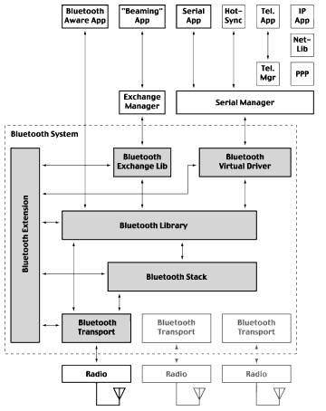

|
The Bluetooth APIs provide developers a way to access the Palm OS Bluetooth system and write Bluetooth-enabled applications. In addition to enabling Bluetooth development, the Palm OS Bluetooth system also provides:
• a user interface for device discovery and connection
• a user interface for passkey entry
• a modified Palm Connection Panel to support Bluetooth
• serial port emulation using the Bluetooth Virtual Serial Driver
• object exchange support using the Bluetooth Exchange Library
This documentation covers how to use the Palm OS Bluetooth APIs but does not provide the basic understanding of Bluetooth concepts and protocols that you need to write Bluetooth code. For more information about Bluetooth, refer to the Specification of the Bluetooth System, available at the Bluetooth Special Interest Group website at www.bluetooth.com. There are also several third-party books that you may wish to consult for helpful Bluetooth information.
Palm OS Bluetooth System

The Palm OS Bluetooth system enables a Palm Powered handheld to:
• access the internet through LAN access points and cell phones
• exchange objects such as business cards and appointments over Bluetooth
• perform HotSync operations over Bluetooth
• communicate with other handhelds for multi-user applications like games and various collaborative applications
• send SMS messages and manage your phone's internal phone book.
The Palm OS Bluetooth system designers focused their efforts on the user, recognizing that on the Palm OS technical interoperability is simply not enough. The user cares about the overall experience. The user's "Bluetooth learning curve" should be short. And, as always, simplicity is key.
Bluetooth System Components
The Palm OS Bluetooth system contains the following components:
• Bluetooth Library
• Bluetooth Virtual Serial Driver
• Bluetooth Exchange Library
• Bluetooth Stack
• Bluetooth Transports
• Bluetooth Extension
Figure 6.1 shows these components and their relationship with each other.
Figure 6.1 Overall Palm OS Bluetooth architecture

Bluetooth Library
The Bluetooth Library is a shared library that provides an API for developers to develop Bluetooth applications. The API provides functions in the following areas:
• Managing remote devices, piconets, and ACL links
• Communicating using the L2CAP and RFCOMM protocols
• Advertising services and querying for remote services using SDP
• Maintaining a list of trusted devices
Bluetooth Virtual Serial Driver
The Bluetooth Virtual Serial Driver allows applications to use the Palm OS New Serial Manager with Bluetooth's RFCOMM protocol as the serial link. As shown in Figure 6.1, the Bluetooth Serial Driver communicates with the rest of the Bluetooth system through the Bluetooth Library. The Bluetooth Virtual Serial Driver is used by PPP, HotSync, and Telephony.
Bluetooth Exchange Library
The Bluetooth Exchange Library allows applications to use the Palm OS Exchange Manager with Bluetooth as the link. As shown in Figure 6.1, the Bluetooth Exchange Library communicates with the rest of the Bluetooth system through the Bluetooth Library. RFCOMM is used as the sole transport mechanism for the Exchange Manager.
Bluetooth Stack
The Bluetooth Stack is a shared library that implements the various protocols of the Bluetooth specification. Palm OS developers don't need to access the Bluetooth Stack directly.
Bluetooth Transports
Bluetooth Transports are shared libraries that act as device drivers for different radios. Palm OS developers cannot access the Bluetooth Transports.
Bluetooth Extension
The Bluetooth extension oversees and coordinates the multiple libraries of the Bluetooth system. Palm OS developers cannot access the Bluetooth extension.
Implementation Overview
The Bluetooth system is a collection of PRCs that can reside in either RAM or ROM. A minimum of 4Mb of RAM is required (256k heap). Incorporation into actual devices is up to the handheld manufacturers.
The Bluetooth system runs in the UI thread, except when it is used by the virtual serial driver.
Profiles
Table 6.1 lists the profiles supported by the Palm OS Bluetooth system.
Table 6.1 Supported Bluetooth profiles
| Profile |
Description |
| Generic Access |
Describes the use of the lower layers of the Bluetooth protocol stack (LC and LMP), security-related alternatives, and the higher layers: L2CAP, RFCOMM, and OBEX. |
| Service Discovery Application |
Defines the protocols and procedures used by a service discovery application on a device to locate services in other Bluetooth-enabled devices using the Service Discovery Protocol (SDP). |
| Serial Port |
Defines the protocols and procedures used by devices using Bluetooth for RS-232 (or similar) serial cable emulation. The scenario covered by this profile deals with legacy applications using Bluetooth as a cable replacement through a virtual serial port abstraction (which in itself is operating system-dependent). |
| Dial-up Networking |
Defines the protocols and procedures used by devices implementing the "Internet Bridge" usage model. This profile covers the usage of a cellular phone or modem both to receive data calls and to connect to a dial-up Internet access server or other dial-up service. |
| LAN Access Point |
Defines LAN access using PPP over RFCOMM. |
| Generic Object Exchange |
Defines the protocols and procedures used by the applications providing the usage models that need object exchange capabilities. |
| Object Push |
Defines the requirements for the protocols and procedures used by applications providing the object push usage model. This profile makes use of the generic object exchange profile to define the interoperability requirements for the protocols needed by applications. |
The following profiles are not supported by the Palm OS Bluetooth system:
• Cordless Telephony
• Intercom
• Headset
• Fax
• File Transfer
• Synchronization
Note that although the Bluetooth system does not support the Bluetooth Synchronization profile, it implements HotSync operations over Bluetooth using the Serial Port profile. Also note that network HotSync operations use PPP.
The Bluetooth system can dial and control voice calls on a Bluetooth-enabled phone as if it were connected through a serial cable. It does this using AT modem commands and not the Cordless Telephony profile.
Usage Scenarios
Bluetooth-enabled Palm Powered handhelds are able to communicate with a variety of remote Bluetooth devices. The Bluetooth system uses the profiles defined by the Bluetooth specification in order to support the following usage scenarios:
Table 6.2 Profiles required by various usage scenarios
|
|
|
Required Profiles |
| Feature |
Handheld Connects With |
Generic Access |
Service Discovery |
Serial Port |
Dial-up Networking |
LAN Access |
Generic Obj. Exchange |
Object Push |
| Email and Web Clipping |
Cell phone |
X |
X |
X |
X |
|
|
|
| Access point |
X |
X |
X |
|
X |
|
|
| Desktop computer |
X |
X |
X |
|
X |
|
|
| HotSync |
Cell phone |
X |
X |
X |
X |
|
|
|
| Access point |
X |
X |
X |
|
X |
|
|
| Desktop computer |
X |
X |
X |
|
|
|
|
| SMS and Mobile Handset Management |
Cell phone |
X |
X |
X |
|
|
|
|
| Beaming |
Many devices |
X |
X |
X |
|
|
X |
X |
Authentication and Encryption
The Bluetooth system handles the generation, utilization, and storage of authentication and encryption keys at the OS level.
The Bluetooth system doesn't support Authorization. Access concerns beyond authentication are left up to the individual application, as in a standard networking environment.
The Bluetooth system supports security modes 1 and 2: the "non-secure" and "service-level enforced security" modes. Security mode 3-"link-level enforced security"-isn't supported by the Bluetooth system.
Device Discovery
In a system of Bluetooth devices, ad-hoc networks are established between the devices. The "inquiry" procedure is used to discover Bluetooth devices within range. The specification defines two inquiry modes, "General" and "Limited." The General mode, which is supported by the Bluetooth system, is used by devices that need to discover devices that are made discoverable continuously or for no specific condition. Limited mode, on the other hand, is used to devices that need to discover devices that are made discoverable for only a limited period of time, during temporary conditions, or for a specific event. The Bluetooth system doesn't support the Limited inquiry mode.
Piconet Support
There are two main scenarios in which a piconet can be created, and the Bluetooth system supports both:
• Master performs inquiry, sees a number of devices, and proceeds to contact each of them. A variant is that the master later performs inquiry to find additional slaves. This should be useful for a game server where the master establishes the connection to each Palm device that wants to participate in a game.
• Master sits in page scan mode, and when a device connects to it, a master/slave switch is performed. The LAN access profile uses this approach for multi-point LAN access devices. The Bluetooth system handles the master/slave negotiation automatically.
The Bluetooth system places existing connections in hold mode while new links are established. In the first scenario outlined above, hold times for each connection are determined based upon a list of the devices that the user has selected to participate in the piconet. The Bluetooth system performs the following for each device on the list:
1. Establish an ACL connection to the device. 2. Place the device in hold mode for a period of time that is a function of the total number of devices that are to participate in the piconet. 3. Delay for a set period of time to allow the slave to enter hold mode.
After all connections have been established, each of the slave hold timers should expire, and the piconet should be operational.
Radio Power Management
The extended battery life of Palm Powered handhelds is considered to be a key competitive advantage by many Palm Powered handheld manufacturers. The Bluetooth system helps preserve battery life by taking advantage of the Bluetooth power efficiency modes (hold, park, and sniff) and the internal power management functionality built into the Bluetooth radio chipset.
Applications don't explicitly put the radio into the sniff, park, or standby modes. Instead, power management is under the control of the Bluetooth system. When participating in a piconet, the Bluetooth system honors requests from the other members of the piconet to enter any of the defined power-saving modes.
Developing Bluetooth-Enabled Applications
The Palm OS exposes Bluetooth through multiple interfaces, allowing you to choose the interface that is best suited for the task at hand. Bluetooth development is supported through the Serial Manager using the Virtual Serial Driver, which is discussed in "Bluetooth Virtual Serial Driver." Object transfer is supported through the Exchange Manager using the Bluetooth Exchange Library, which is discussed in "Bluetooth Exchange Library Support." Finally, you can program directly with the Bluetooth Library APIs, which is the subject of this section.
Regardless of which approach you take, your applications should check if the Bluetooth system is running on the handheld before using any Bluetooth APIs. To do so, use the following code:
UInt32 btVersion;
// Make sure Bluetooth components are installed
// This check also ensures Palm OS 4.0 or greater
if (FtrGet(btLibFeatureCreator, btLibFeatureVersion,
&btVersion) != errNone)
{
// Alert the user if it's the active application
if ((launchFlags & sysAppLaunchFlagNewGlobals) &&
(launchFlags & sysAppLaunchFlagUIApp))
FrmAlert (MissingBtComponentsAlert);
return sysErrRomIncompatible;
}
Overview of the Bluetooth Library
From a programmer's perspective, the functions of the Bluetooth library fall into four areas: management, sockets, security, and utility.
• The management functions deal with the radio and baseband parts of the Bluetooth specification. You use them to find nearby devices and establish ACL links.
• The socket functions enable communication with L2CAP, RFCOMM, and SDP.
• The security functions manage a set of trusted devices-devices that do not have to authenticate when they create a secure connection with the handheld.
• The utility functions perform useful data conversions.
Management
Three basic management tasks common among Bluetooth applications are finding the Bluetooth devices in range, establishing ACL links, and working with piconets. However, in order for your code to use any of the functions that do these operations, you need to create a management callback function.
Management Callback Function
Most management calls are asynchronous. In other words, they start an operation and return before the operation actually completes. When the operation completes, the Bluetooth Library notifies the application by way of a callback function. Such a notification is called a management event.
In some cases, a management function fails before starting the asynchronous operation. In this case, the callback function does not get called. You can tell whether the callback function will be called or not by looking at the management function's return code:
| btLibErrNoError | The operation has completed and the callback function will not be called. |
| btLibErrPending | The operation has started successfully and the callback function will be called, |
| any other error code | The operation failed and the callback function will not be called. |
The management callback function has two parameters: a management event structure, which contains all the information about the event that has occurred, and a reference context, an optional UInt32 you can use to establish the context of the event. The callback function needs to provide the code that handles the events generated as a result of the operations you perform.
The callback function should not perform any heavyweight processing; doing so prevents the Bluetooth stack from running. You can defer processing by generating a custom system event in the callback function and responding to the event with your event handling code. For some operations, you must defer the processing. For example, the callback function cannot close the Bluetooth library in response to a btLibManagementEventAclDisconnect event.
As a simple example, consider the task of finding nearby devices, discussed in the next section. The callback function must respond to four events: btLibManagementEventInquiryResult, btLibManagementEventInquiryComplete, btLibManagementEventInquiryCanceled, and btLibManagementEventRadioState. The following code is a skeleton of the callback function you need:
void MyManagementCallback (BtLibManagementEventType *eventP,
UInt32 refcon) {
switch (eventP->event) {
case btLibManagementEventInquiryResult :
// A device has been found. Save it in a list
break;
case btLibManagementEventInquiryComplete :
// The inquiry has finished
break;
case btLibManagementEventInquiryCanceled :
// The inquiry has been canceled
break;
case btLibManagementEventRadioState :
// The radio state has changed
break;
default :
// Unknown event
break;
}
To tell the Bluetooth Library to use your callback function, call BtLibRegisterManagementNotification. You should always unregister your callback before closing the Bluetooth Library.
For a list of management events, see "Management Callback Events" in Chapter 77, "Bluetooth Library: Management."
Opening the Library
To open the Bluetooth library, use the BtLibOpen function. At this time, the Bluetooth library starts the radio initialization process. When initialization successfully finishes, the Bluetooth library generates a btLibManagementEventRadioState event with a status of btLibErrRadioInitialized. You must wait for the initialization to complete successfully before calling any Bluetooth library function involving the radio.
The exceptions to this rule are the discovery functions, BtLibDiscoverMultipleDevices and BtLibDiscoverSingleDevice, which handle the radio initialization events automatically and can be called directly after the Bluetooth library is opened.
Finding Nearby Devices
There are two ways to find Bluetooth devices that are within range:
• Use the BtLibDiscoverMultipleDevices and BtLibDiscoverSingleDevice functions to find nearby devices. These functions bring up a user interface that allows the user to choose one or more devices.
• Perform a device inquiry using BtLibStartInquiry. This is more difficult to do than using one of the discovery functions, but provides more flexibility.
When you call BtLibStartInquiry, the Bluetooth Library searches for all devices in range. Whenever it finds a device, it generates a btLibManagementEventInquiryResult event. When the inquiry has completed, a btLibManagementEventInquiryComplete event is generated. To cancel the inquiry, call BtLibCancelInquiry. The btLibManagementEventInquiryCanceled event is generated when the cancellation succeeds.
Creating ACL Links
Once you have the device address of a remote device, you can attempt to create an ACL link to it using the BtLibLinkConnect function. This causes the btLibManagementEventAclConnectOutbound event to be generated, and the status code within that event indicates whether or not the link was successfully established.
To disconnect a link, use the BtLibLinkDisconnect function. This causes the btLibManagementEventAclDisconnect event to be generated. Note that the same event is generated when the remote device initiates the disconnection.
Your program must also respond to btLibManagementEventAclConnectInbound events that indicate that a remote device has established a link with the handheld. You can disconnect an inbound link with the BtLibLinkDisconnect function.
Working With Piconets
Bluetooth supports up to seven slaves in a piconet. The Bluetooth Library provides simplified APIs to create and destroy piconets.
Note that the Bluetooth 1.1 specification suggests that the upper software layers place slaves in hold or park mode while new connections are established. This isn't well-defined in the specification, and is difficult to do because of timing. The Bluetooth Library expects the radio baseband to handle piconet timing.
To create a piconet, the "master" calls BtLibPiconetCreate. Slaves can then discover the master and join the piconet, or the master can discover and connect to the slaves. The master stops advertising once the limit of seven slaves has been reached. Note that any device should be capable of acting as a slave.
The piconet can be locked to prevent additional slaves from joining. The master can still discover and add slaves, however. With the piconet locked, there is a bandwidth improvement of approximately 10%.
In the Bluetooth Library, the following functions support the management of piconets:
• BtLibPiconetCreate: create a piconet or reconfigure an existing piconet so the local device is the master.
• BtLibPiconetDestroy: destroy the piconet by disconnecting links to all devices and removing all restrictions on whether the local device is a master or a slave.
• BtLibPiconetLockInbound: prevent remote devices from creating ACL links into the piconet.
• BtLibPiconetUnlockInbound: allow additional slaves to create ACL links into the piconet.
Remember the following limitations of piconets: Slave-to-slave communication is not permitted. The master cannot "broadcast" to slaves.
Sockets
The Bluetooth Library uses the concept of sockets to manage communication between Bluetooth devices. A socket represents a bidirectional packet-based link to a remote device. Sockets run over ACL connections. The Bluetooth library can accommodate up to 16 simultaneous sockets.
Three types of sockets are supported by the Bluetooth Library. L2CAP and RFCOMM sockets establish data channels and send and receive arbitrary data over those channels. SDP sockets allow you to query remote devices about the services those devices provide.
To send a packet of data over an L2CAP or RFCOMM socket, use the BtLibSocketSend function. The send buffer must not change until the send completes. In other words, you must not modify the buffer, free the buffer, or use a local variable for the buffer. The Bluetooth Library notifies you when the send completes by generating a btLibSocketEventSendComplete event. You can only have one outstanding packet on each socket.
The btLibSocketEventData event indicates data has been received.
L2CAP
L2CAP sockets don't allow for flow control.
Establishing Inbound L2CAP Connections
To set up for inbound L2CAP connections, you call the following:
1. BtLibSocketCreate: create an L2CAP socket. 2. BtLibSocketListen: set up an L2CAP socket as a listener. 3. BtLibSdpServiceRecordCreate: allocate a memory chunk that represents an SDP service record. 4. BtLibSdpServiceRecordSetAttributesForSocket: initialize an SDP memory record so it can represent the newly-created L2CAP listener socket as a service 5. BtLibSdpServiceRecordStartAdvertising: make an SDP memory record representing a local SDP service record visible to remote devices.
When you get a btLibSocketEventConnectRequest event, you need to respond with a call to BtLibSocketRespondToConnection. You then receive a btLibSocketEventConnectedInbound event with an inbound socket with which you can send and receive data.
The listening socket remains open and will notify you of further connection attempts. In other words, you can use a single L2CAP listening socket to spawn several inbound sockets. You cannot close the listening socket until after you close its inbound sockets.
Establishing Outbound L2CAP Connections
To establish an outbound L2CAP connection, you first establish an ACL link to the remote device. Then you call:
1. BtLibSocketCreate: create an SDP socket. 2. BtLibSdpGetPSMByUuid: get an available L2CAP PSM using SDP. 3. BtLibSocketClose: close the SDP socket. 4. BtLibSocketCreate: create an L2CAP socket. 5. BtLibSocketConnect: create an outbound L2CAP connection.
RFCOMM
RFCOMM emulates a serial connection. It is used by the Bluetooth Virtual Serial Driver and the Bluetooth Exchange Library.
When using RFCOMM, you can only have one inbound connection per listener socket. Flow control uses a "credit" system: you need to advance a credit to the far end before you can receive a data packet.
RFCOMM defines the notions of server and client. A server uses SDP to advertise its existence and listens for inbound connections. A client creates an outbound RFCOMM connection to a server.
Establishing Inbound RFCOMM Connections
To set up for inbound RFCOMM connections, call the following:
1. BtLibSocketCreate: create an RFCOMM socket. 2. BtLibSocketListen: set up the RFCOMM socket as a listener. 3. BtLibSdpServiceRecordCreate: allocate a memory chunk that represents an SDP service record. 4. BtLibSdpServiceRecordSetAttributesForSocket: initialize an SDP memory record so it can represent the newly-created RFCOMM listener socket as a service 5. BtLibSdpServiceRecordStartAdvertising: make the SDP memory record representing your local SDP service record visible to remote devices.
When you get a btLibSocketEventConnectRequest event, you need to respond with a call to BtLibSocketRespondToConnection. You then receive a btLibSocketEventConnectedInbound event with an inbound socket with which you can send and receive data. To send data, use the BtLibSocketSend function. The btLibSocketEventData event indicates data has been received.
The listening socket will not notify you of further connection attempts. In other words, a single RFCOMM listening socket can only spawn a single inbound RFCOMM socket. You cannot close the listening socket until after you close its inbound socket.
Establishing Outbound RFCOMM Connections
To establish an outbound RFCOMM connection, you first establish an ACL link to the remote device. Then you call:
1. BtLibSocketCreate: create an SDP socket. 2. BtLibSdpGetServerChannelByUuid: get an available RFCOMM server channel using SDP. 3. BtLibSocketCreate: create an RFCOMM socket. 4. BtLibSocketConnect: Create an outbound RFCOMM connection.
Bluetooth Virtual Serial Driver
The Bluetooth system implements the serial port profile with a Virtual Serial Driver. This driver has the following characteristics:
• Opens a background thread for the Bluetooth stack.
• Supports only one current active serial channel (point-to-point connection) at a time.
• Is opened explicitly as either a client or a server.
• Is utilized, as a client, by the following Palm OS components:
- PPP - HotSync - Telephony
• If opened as a server, advertises a list of services (UUIDs) for remote clients to query.
• If opened as a client, creates the necessary baseband and RFCOMM connections, based upon information passed in by the opener.
An RFCOMM-based virtual serial port is far less symmetrical than a physical serial port. In a traditional serial port, there is no need to establish the underlying transport. When establishing a Bluetooth serial port, however, there are roles for a client and a server device on three different stack levels-ACL, L2CAP, and RFCOMM-as well as responsibilities for registering with and querying SDP.
Opening the Serial Port
You can use the new SrmExtOpen function to open a Bluetooth serial port, passing Bluetooth-specific parameters in a custom info block. You should first verify that the port being opened is in fact a Bluetooth serial port, since other types of ports may use the block for other purposes.
For the benefit of certain legacy applications, the driver also supports being opened by the old SrmOpen function. In that case, the driver presumes the role of client, performs device discovery with user interaction, and looks for remote channel advertising the Serial Port Service Class.
To open an RFCOMM virtual serial port with SrmExtOpen, you need to create a BtVdOpenParams structure. This structure is declared as follows:
typedef struct {
BtVdRole role;
union {
BtVdOpenParamsClient client;
BtVdOpenParamsServer server;
} u;
Boolean authenticate;
Boolean encrypt;
} BtVdOpenParams;
How you populate this structure depends on whether you are opening the serial port as a client or as a server. A client initiates baseband and RFCOMM connections, while a server waits for incoming baseband and RFCOMM connections.
If you are acting as a client, set the structure's role member to btVdClient and fill in the client member of the union as described in "Opening the Port as a Client." If you are acting as a server, set the structure's role member to btVdServer and fill in the server member of the union as described in "Opening the Port as a Server."
Irrespective of whether you are acting as a client or as a server, set authenticate to true if you require link authentication. Similarly, set encrypt to true if you require link encryption. Link encryption requires link authentication.
Opening the Port as a Client
When playing the client role you must specify the address of the remote Bluetooth device and the service to connect to on the remote device. You do this by filling out the client member of the union in the BtVdOpenParams structure. This member is declared to be a BtVdOpenParamsClient structure, which looks like this:
typedef struct {
BtLibDeviceAddressType remoteDevAddr;
BtVdClientMethod method;
union {
BtLibRfCommServerIdType channelId;
BtVdUuidList uuidList;
} u;
} BtVdOpenParamsClient;
If you know the address of the Bluetooth device to which you want to connect, supply the address in remoteDevAddr. Otherwise, supply an address value of all zeros; this will cause a Bluetooth device discovery operation to be initiated, allowing the handheld user to choose the device to connect to.
When connecting to a remote service using RFCOMM, you have two basic options:
• use SDP to look for one or more UUIDs
• connect to a specific RFCOMM channel ID
You normally specify the service to which to connect by providing a list of one or more service class UUIDs. Simply set the structure's method member to btVdUseUuidList and supply a list of UUIDs using the uuidList member of the structure's union. This will trigger a series of SDP queries, searching for each of the specified service classes. The first service class that is found on the remote device will be used. If it suits your application, specify an empty list of service class UUIDs (set the list count of zero); this causes an SDP query to be made for a default Palm-specific service class UUID (953D4FBC-8DA3-11D5-AA62-0030657C543C).
The result of a successful SDP query is the RFCOMM server channel to which to connect on the remote device. To facilitate testing, you can bypass SDP querying and directly specify the remote RFCOMM server channel ID. Simply set the structure's method member to btVdUseChannelId and set the channelId member of the structure's union to the server channel ID.
The call to SrmExtOpen blocks until the RFCOMM connection is established or it is determined that the connection cannot be established. The driver displays a progress dialog, giving the user the opportunity to cancel the connection attempt.
SrmExtOpen returns zero if and only if the RFCOMM connection was successfully established.
Opening the Port as a Server
Relative to the process of opening the serial port as a client, opening the port as a server is pretty simple. When playing the server role, you need only specify the UUID of the service you wish to advertise. Optionally, you can also specify a user-readable name for that service.
Specify the service UUID and user-readable name by filling out the server member of the union in the BtVdOpenParams structure. This member is a BtVdOpenParamsServer structure, which is declared as follows:
typedef struct {
BtLibSdpUuidType uuid;
const Char *name;
} BtVdOpenParamsServer;
As a convenience, you can specify a null UUID (all binary zeros), in which case the default Palm-specific service class UUID will be advertised. (953D4FBC-8DA3-11D5-AA62-0030657C543C).
The call to SrmExtOpen returns immediately, without waiting for an incoming RFCOMM connection. To wait for incoming data, periodically call either SrmReceive, SrmReceiveWait, or SrmReceiveCheck.
Example
The following code excerpt illustrates a call to SrmExtOpen that, acting as a client, creates an RFCOMM virtual serial port and connects to a known RFCOMM channel on a remote device:
Err err;
SrmOpenConfigType config;
BtVdOpenParams btParams;
UInt16 btPortId;
config.function = 0; // must be zero
config.drvrDataP = (MemPtr)&btParams;
config.drvrDataSize = sizeof(BtVdOpenParams);
btParams.role = btVdClient; // we are the client side
btParams.u.client.remoteDevAddr.address[0] = ...; // remote device addr byte 1
...
btParams.u.client.remoteDevAddr.address[5] = ...; // remote device addr byte 6
btParams.u.client.method = btVdUseChannelId;
btParams.u.client.u.channelId = 0x53;
err = SrmExtOpen(
sysFileCVirtRfComm, // type of port == RFCOMM
&config, // port configuration params
sizeof(config), // size of port config params
&btPortId // receives the id of this virtual serial port instance
);
Note that this code excerpt will not compile as-is; the remote Bluetooth device address has not been properly specified.
Palm-to-Palm Communication
Most applications act as clients only. However, in the case of Palm-to-Palm applications, they may need to act as both clients and servers. In this case, the virtual serial driver should initially be configured as a server to advertise its services to the other remote device. At this point, both devices are acting as servers, advertising their services. When a user-initiated action causes one of the devices to reopen the virtual serial driver as a client, it can then discover the remote device and its advertised service-advertised through a predefined, agreed-upon UUID-so that a channel can be opened between the two devices.
How Palm OS Uses the Bluetooth Virtual Serial Driver
Within the Palm OS, HotSync, PPP, and the Telephony Manager can all use Bluetooth, although they can only act as clients.
For these clients, the user performs device discovery and device pairing, if appropriate, from within the Connection Panel. These clients can then consult the Connection Panel to determine the address of the remote device, the link key, and the service class to look for on the remote device. For example, if PPP is using the connection profile that indicates that the remote device is a phone or a modem, it looks for the Dialup Networking Service Class UUID. But if the profile indicates that the remote device is a PC or a LAN access point, it looks for the LAN Access Using PPP Service Class UUID.
Bluetooth Exchange Library Support
Accompanying the Bluetooth Library is the Bluetooth Exchange Library, a shared library that allows applications to support Bluetooth using the standard Exchange Manager APIs. The Bluetooth Exchange Library conforms to the Object Push and Generic Object Exchange profiles.
For more information about the Exchange Manager, see the "Object Exchange" chapter of the Palm OS Programmer's Companion.
Detecting the Bluetooth Exchange Library
To check for the presence of the Bluetooth Exchange Library, you use FtrGet:
err = FtrGet(btexgFtrCreator,
btexgFtrNumVersion, &btExgLibVersion);
If the Bluetooth Exchange Library is present, FtrGet returns errNone. In this case, the value pointed to by btExgLibVersion contains the version number of the Bluetooth Exchange Library. The format of the version number is 0xMMmfsbbb, where MM is the major version, m is the minor version, f is the bug fix level, s is the stage, and bbb is the build number. Stage 3 indicates a release version of the library. Stage 2 indicates a beta release, stage 1 indicates an alpha release, and stage 0 indicates a development release. So, for example, a value of 0x01013000 would correspond to the released version 1.01 of the Bluetooth Exchange Library.
Using the Exchange Manager With Bluetooth
Using the Exchange Manager with Bluetooth is almost exactly like using it with IRDA and SMS. The differences are as follows:
• The URL you use when you send an object has some special fields specific to Bluetooth.
• Your application may want to know the URL of the device or devices with which it is communicating. The Exchange Manager provides a way to get this information.
• The ExgGet and ExgRequest functions are not supported with Bluetooth.
These differences are discussed further in the following sections.
Bluetooth Exchange URLs
If you send objects using the Bluetooth Exchange Library and use a URL, you can send the objects to single or multiple devices at the same time depending on the way the URL is formed. A Bluetooth Exchange Library URL can have one of the following forms:
| _btobex://?_multi/filename | Performs a device inquiry, presents the available devices to the user, and allows the user to choose one or more devices. Sends the object to all selected devices. |
| _btobex://?_single/filename | Performs a device inquiry, presents the available devices to the user, and allows the user to choose only one device. Sends the object to that device. |
| _btobex://address1[,address2, ...]/filename | Sends the object to the device(s) with the specified Bluetooth device address(es). The addresses are in the form "xx:xx:xx:xx:xx:xx". |
Do not combine these URL forms. Doing so may give unintended results.
Obtaining the URL of a Remote Device
For some applications you need to know the URL that addresses the remote device from which you receive data. This is especially useful for games. You can get the URL after calling ExgAccept using a ExgControl function code as shown in the following code:
ExgCtlGetURLType getUrl;
UInt16 getUrlLen;
// First get the size of the URL
getUrl.socketP = exgSocketP;
getUrl.URLP = NULL;
getUrl.URLSize = 0;
getUrlLen = sizeof(getUrl);
ExgControl(exgSocketP, exgLibCtlGetURL, &getUrl, &getUrlLen);
// Now get the URL
getUrl.URLP = MemPtrNew(getUrl.URLSize);
ExgControl(exgSocketP, exgLibCtlGetURL, &getUrl, &getUrlLen);
// getUrl.URLP points to a null-terminated URL string
// describing the remote device, for example,
// "_btobex://01:23:45:67:89:ab/"
...
// Free the URL after you're done with it
MemPtrFree(getUrl.URLP);
ExgGet and ExgRequest
The Bluetooth Exchange Library does not support the pull functions provided by ExgGet and ExgRequest. If you want to perform these functions, you must use the general Bluetooth Library APIs. See "Developing Bluetooth-Enabled Applications".
|